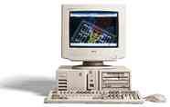

Phil Storrs PC Hardware book
PRINTERS (Hard Copy Devices)
The most popular personal computer peripheral after the Video Display Monitor must be a Printer, all serious users of personal computers need to produce a hard copy of the documents they work with.
Printers can be classified in several ways.
By the way they actually form the characters on the paper
- Solid character
- Dot Matrix
Printers can also be classified as
Common types of printers that have been used with personal computers
Solid character types (all of these printers are Impact printers)
- Teletype (character wheels)
- Typewriter (character bars)
- Golf Ball (first high quality printer)
- Daisywheel (very high quality printer)
- Drum (very high speed line printers used on mini and main frame systems)
- Band (very high speed line printers used on mini and main frame systems)
This type of printer is limited to one type-face (font) at a time. The golf ball and daisy wheel printers had interchangeable "balls" and "wheels" to change the type-face but it was not practicle to change the fonts within a document. All the above printer types are now obsolete.
Dot Matrix (the first two only are Impact printers)
- Impact Dot Matrix
- Thermal Dot Matrix - Thermal paper - Thermal ribbon
- Ink Jet
- Laser
- Wax transfer (colour)
Impact Dot Matrix
The most popular printer for a long time was the Impact Dot matrix. When the first P.C. computer was released, this type of printer produced very poor results and daisy wheel printers were used for letter quality printing.
Modern Impact Dot Matrix printers are available in 9 pin and 24 pin models and even the cheapest nine pin models produce acceptable NLQ (near letter quality) results. 24 pin printers are faster and produce much better results than 9 pin printers. A 9 pin printer has to make three passes to print 24 dots! Characters printed in Draft mode have far fewer dots than those printed in NLQ mode. In NLQ mode, the same dot is struck multiple times to increase the image density.
Printer options
Paper feed
Printers can accept Fan Fold (tractor feed) or Cut Sheet paper and most older Impact Dot Matrix printers usually had a "tractor feed" as standard and some provided a simple means of feeding a single sheet of paper at a time. With most Impact Dot Matrix printers a "cut sheet feeder" is an expensive option. For many users the cut sheet feeder is better than tractor feed, it uses photo-copy paper which is of much higher quailty that fan fold paper.
Character sets.
When used at a DOS level it is important that the printer be aware of the IBM extended character set. Old Impact Dot Matrix printers usually do not support the IBM character set. They may only support the EPSON "Italic" characters set in addition to standard ASCII.
What sort of printer should we use ?
Today the most popular printer is the Ink Jet, but if we require the best print quality and high speed, a Laser Printer is the best option. Printers are now a low cost item with Ink Jet printers available for as little as $100.
For and against laser Vs Ink jet (the pluses (+) Vs. minuses (-).)
| Characteristic |
Laser |
Ink jet |
|---|
| Resolution |
Minimum of 300 DPI, and available up to 1200 DPI (dots per inch) (+) |
maximum of 720 DPI (-) |
| Cost of running |
cheap paper cost (+) |
may require special paper (-) |
| |
toner and drum is expensive to replace (-) |
ink cartridges can be expensive |
| |
colour is very expensive (-) |
colour is cheaper (+) |
| Environmental |
generates ozone, ozone attacks plastics and rubbers (-) |
very clean (+) |
| |
higher power consumption (-) |
low power consumption (+) |
| Cost |
A3 sheet size is very expensive (-) |
A3 option low cost (+) |
| |
Laser printers more expensive (-) |
Ink Jet printers less expensive (+) |
| Speed |
Laser is faster (+) |
Ink Jet is slower (-) |
The Printer Interface
The most common interface used for printers is the Centronics Parallel interface. The serial ports (COM ports) are sometimes used to interface laser printers, or where a printer is located some distance from a host computer. The Centronics interface has a cable length limit of 3 metre but this can often be exceeded. If a serial printer is to be used under DOS, or simple software, the COM port being used must be configured and the "standard printer output "must be diverted away from LPT1:. The DOS external command MODE is used to perform both of these tasks and all it involves is to include the following two command lines in the AUTOEXEC.BAT file of the computer.
This first line configures the COM port.
MODE COMX: SSSS,N,8,1,P
Where COMX = COM1, COM2, COM3, or COM4.
SSSS = Data speed, 1200, 2400, 4800, 9600 etc.
N = parity - N = none
- O = odd
- E = even
8 = data word size, 7 or 8
1 = one stop bit, 1, 1½, or 2
P = tells DOS the device is slow (don't timeout)
This next line diverts the standard printer output away from LPT1: and to the com port in use.
MODE LPT1: = COMX :
You must look in the printer manual for the actual values to use in the MODE command. Some printers can be configured for bit rates, word size, stop bits and parity, and some have fixed values. Watchout for settings with a seven bit word. - Seven bits will only provide the ASCII character set, eight bits are required for the IBM Extended Character Set.
Many "old" printers only have an ASCII character set and those that do have some sort of extended character set, may only have the EPSON "Italic" set or some non standard extended character set. For a printer to be DOS compatible it must produce the IBM Extended Character Set.
Setting up Printers
Modern printers can be configured for interface, paper feed, character sets, "emulation", page size, character size and line space. Most older printers had D.I.P switches to configure the printer, but modern printers use a "soft set-up" that is controlled from the normal printer buttons, and either displays the settings or options on a L.C.D. screen display, or prints it on the paper. CAUTION - A modern printer without its manual may be almost useless.
Sharing Printers
Printers can be shared by ; -
- Simple manual switch box
- Automatic switch box
- These usually have a large buffer with several Meg of Ram.
- Local area network
- Printer Sharer Device
- Each computer has a "box" on one of it's parallel or serial ports, and this box is linked to other boxes via a 4 wire telephone type cable and RJ11 connectors. The cable goes from computer to computer and to a similar "box" on the back of the printer. The boxes are sometimes powered from the ports and sometimes a plug pack must be used.
CAUTION: - Some of the parallel ports on modern system boards and on SPG and IDE/SPG (Serial Parallel Games) cards will not power such devices. This is due to the "V.L.S.I." output devices used on these cards. They can't supply the current required by external interface boxes (and sometimes software security devices)
Problems with Printers
Problem's can be in; -
- The printer interface in the host computer
- The cable between the computer and the printer
- The printer itself
- The printers interface
- The electronics that drives the print mechanism
- The software or operating system configuration
It is good practice if you are a field service technician to carry with you at all times; -
- A spare parallel port card or I/O card that includes a parallel port.
- A spare parallel printer interface cable.
- Diagnostic Software and Loop-back plugs.
All printers have a built in self-test-mode that is accessed through some combination of buttons as the power is turned on. This test does not test the printers interface, or how the printer is setup.
When testing the parallel port watch out for the port assignment. If the printer is on LPT1: you can test the interface by copying a file to it. COPY AUTOEXEC.BAT PRN You can redirect the display to the printer port. DIR >PRN or you can use the Print Screen function.
This does not always mean the port is functioning correctly. The CENTRONICS interface uses two sets of Hand shaking lines and several Control lines. DOS and many software packages only use some of these lines and this simple test may not show up some faults.
Testing a parallel (LPT) port
A parallel port can be tested with diagnostic software like CHECKIT. This sort of software requires a Loop Back Plug to test the port fully. The Loop-Back Plugs required by the various diagnostic packages are not the same.
Remember
DOS (and simple software) can only talk to the parallel printer if it is connected to LPT1: and the DOS hardware has three alternative Parallel Port I/O assignments. When the BIOS goes through it’s POST routine it looks at what I/O ports are available and assigns LPT1:, to one of them.
The evolution of the Parallel port
Over the years since the PC was first produced the Parallel port has evolved and it's data throughput has risen from about 100 Kbytes per second to as high as 2 Megbytes per second in the case of the latest Enhanced Parallel Port. You will learn more about this in a another chapter.